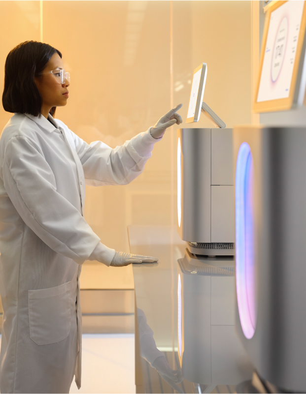
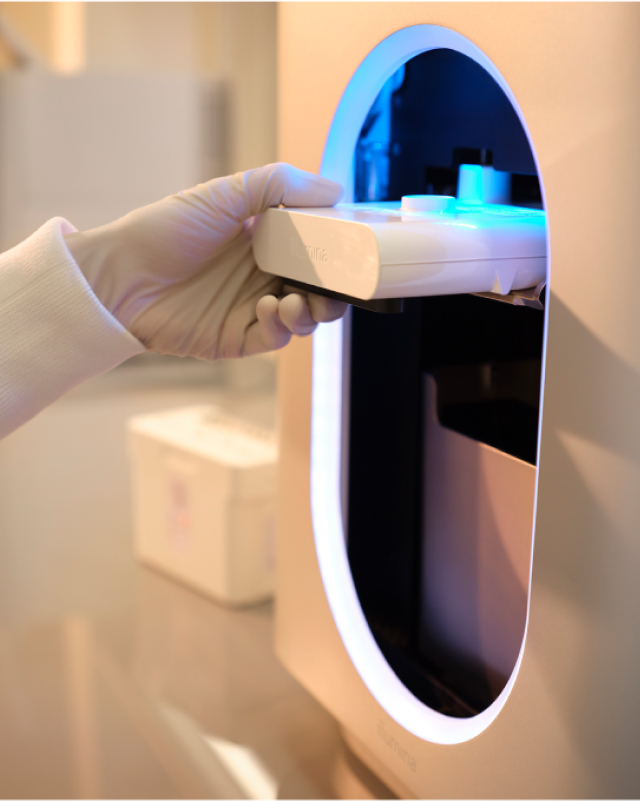
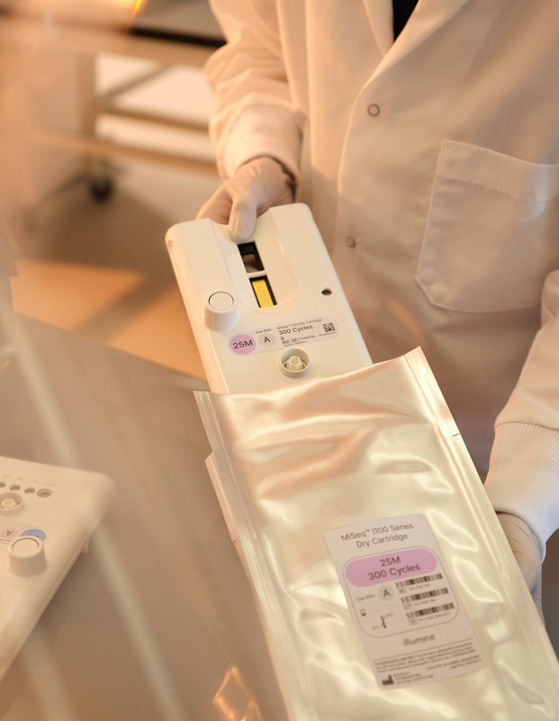
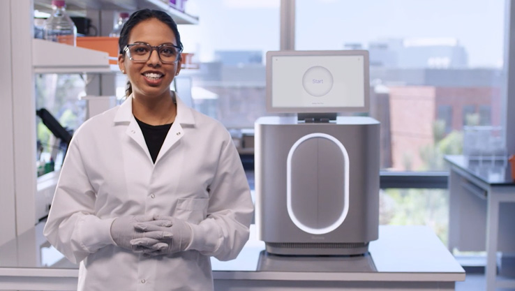
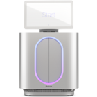
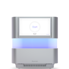
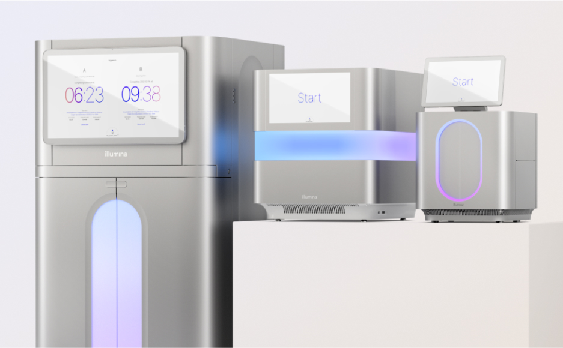
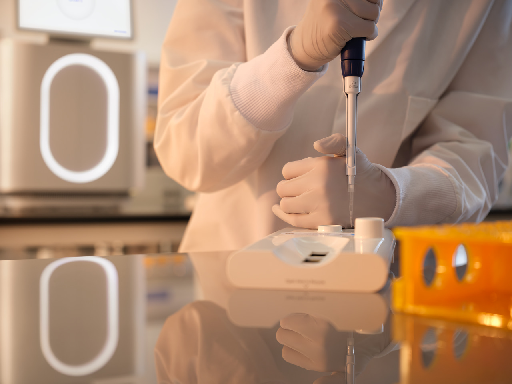

MiSeq i100 Series
Fastest, simplest. For every lab.
Remarkably simple from run setup to data analysis
Fastest, simplest. For every lab.
Remarkably simple from run setup to data analysis
The MiSeq i100 Series delivers our fastest run times yet, breakthrough simplicity, and significant sustainability advancements to empower every lab, everywhere

Same-day (and same-shift) results are now possible. The MiSeq i100 and MiSeq i100 Plus Systems provide results 4× faster than the MiSeq System, with sequencing run times as fast as four hours.
Every aspect of the MiSeq i100 Series workflow is noticeably simplified, from setup to data analysis. Run setup requires only three steps and can be completed in less than 20 minutes.


The MiSeq i100 Series is optimized to reduce environmental impact. Key innovations include an 85% reduction in packaging waste and a 35% reduction in the total carbon footprint, plus room-temperature ship-and-store consumables.
Trusted for over a decade, the MiSeq System has been shipped to over 10,000 customers globally, and has been cited in over 160,000 peer-reviewed publications.

See how the MiSeq i100 Series is setting the standard for simplicity, usability, and speed of benchtop sequencing from Illumina.

Illumina provides a world-class support team composed of experienced scientists who are experts in library prep, sequencing, and analysis. This exceptional technical support is available via phone five days a week or online 24/7, worldwide, and in multiple languages, with rapid response time near most major metropolitan areas.
To help you get high-quality results on Illumina technology even faster, we offer instructor-led or hands-on courses and web-based training options.
With both supported workflows and a large ecosystem of choices, Illumina products are available for every step of the MiSeq i100 Series workflow.
The MiSeq i100 Series offers highly accurate quality data for various applications, including oncology, infectious disease, and microbiology studies.


MiSeq i100 Series

Run time (range)
~4–24 hr
8–44 hr
Max output
30 Gb
540 Gb
Max reads per run
100 million single reads / 200 million paired-end reads
1.8 billion single reads / 3.6 billion paired-end reads
Informatics options
On-instrument: Custom menu of DRAGEN analysis pipelines
Cloud: Broad menu of DRAGEN analysis applications available on BaseSpace Sequence Hub and Illumina Connected Analytics
On-premises: Broad menu of DRAGEN analysis applications
On-instrument: Custom menu of DRAGEN analysis pipelines
Cloud: Broad menu of DRAGEN analysis applications available on BaseSpace Sequence Hub and Illumina Connected Analytics
On-premises: Broad menu of DRAGEN analysis applications
These resources cover key topics in NGS designed for beginners. We'll provide tutorials, guide you through the workflow and planning your first experiment.

Acquire the instruments and consumables you need with a financing plan that works for your lab.
Increase your confidence in instrument uptime with predictive monitoring, transparent system insights, and responsive support.

Pushing the boundaries of biosurveillance using the MiSeq i100 Plus
This case study explores how the MiSeq i100 Plus System is being used in infectious disease research.
Accelerating influenza research and surveillance with the MiSeq i100 Series
Dr. Seiichiro Fujisaki of Japan's National Institute of Infectious Diseases shares how the MiSeq i100 Plus streamlines influenza surveillance with faster turnaround, easy workflows, and cost savings.

Producing better genomes with the MiSeq i100 Plus System
This case study discusses how University of Zurich Institute of Medical Microbiology addresses existing challenges with microbial genome sequencing.

MiSeq i100 Series Reagent Kits
Reagents for the MiSeq i100 Series feature easy-to-use cartridges and multiple flow cell configurations for flexible sequencing options.

A fast, integrated workflow for preparing libraries for use in a wide range of sequencing applications.

Illumina RNA Prep with Enrichment
A fast, integrated workflow for producing enriched and indexed sequencing libraries from a broad range of sample types and RNA input quantities.

Illumina Microbial Amplicon Prep
A flexible and streamlined NGS library prep kit that enables various public health surveillance and microbial research applications.
*Based on shipping weight compared to MiSeq System.
†Based on comparison of MiSeq reagent kits to MiSeq i100 reagent kits per one Gb of genetic code, measured in Global Warming Potential through an internal streamline life cycle assessment (LCA) study.
References
Title
MiSeq i100 Series | Benchtop sequencing with speed and simplicity
Description
The MiSeq i100 Series delivers our fastest run times yet, breakthrough simplicity, and significant sustainability advancements to empower every lab.
Keywords
MiSeq i100, sequencing, benchtop sequencer, NGS, next-generation sequencing
og:image